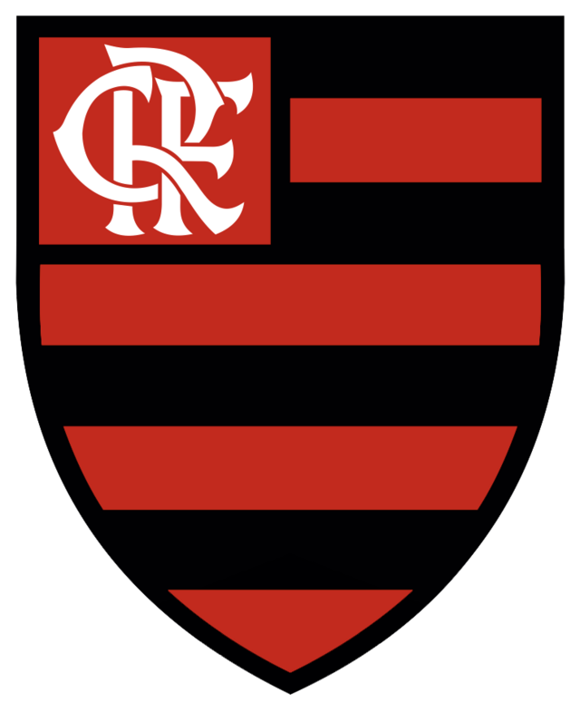

Acessibilidade
Acessibilidade
https://commons.wikimedia.org/wiki/File:Flamengo-RJ_(BRA).png?uselang=pt-br
FLAMENGO
https://commons.wikimedia.org/wiki/File:Corinthians-paulista-logo-B9AAE5151E-seeklogo.com_(1).png?uselang=pt-b
 CORINTHIANS
CORINTHIANS
https://commons.wikimedia.org/wiki/File:Liverpool_FC_crest,_Main_Stand.jpg?uselang=pt-br
 LIVERPOOL
LIVERPOOL
https://commons.wikimedia.org/wiki/File:Real-madrid-icon-1467x2048-p4mfm7ya.png?uselang=pt-br
 REAL MADRID
REAL MADRID
https://commons.wikimedia.org/wiki/File:Brasao_do_Sao_Paulo_Futebol_Clube.svg?uselang=pt-br
 SÃO PAULO
SÃO PAULO
 SANTOS
SANTOS
https://commons.wikimedia.org/wiki/File:Cruzeiro_Esporte_Clube_(logo).svg?uselang=pt-br
.svg.png) CRUZEIRO
CRUZEIRO